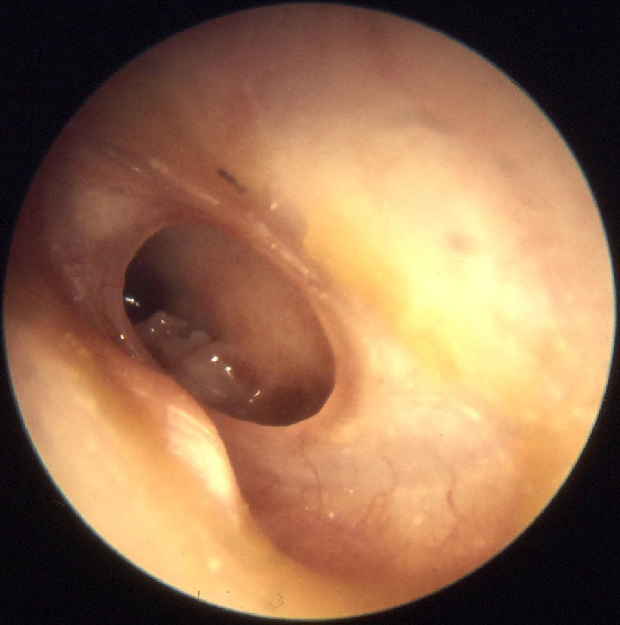
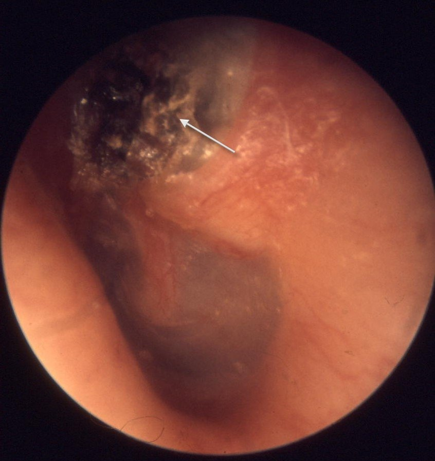

Хронический гнойный средний отит и отогенные осложнения
Определение и формы хронического гнойного среднего отита
Хронический гнойный средний отит представляет собой заболевание с бактериальной инфекцией в среднем ухе. Как правило, он возникает вследствие нелеченого острого среднего отита, особенно в первые 5 лет жизни, когда поствоспалительные изменения слизистой оболочки способствуют хронизации процесса. По определению ВОЗ, о хроническом течении говорят при постоянном отделяемом из уха через перфорацию барабанной перепонки дольше 2 нед; ассоциация оториноларингологов настаивает на сроке 4 нед. Без адекватного лечения гноетечение продолжается месяцами и годами, а процесс ведёт к разрушению костных структур среднего уха и прогрессирующему снижению слуха.
По течению и тяжести выделяют две формы: мезотимпанит (хронический туботимпанальный гнойный средний отит, H66.1) и эпитимпанит (хронический эпитимпано-антральный гнойный средний отит, H66.2). Принципиальное различие состоит в том, что при мезотимпаните поражается слизистая оболочка, а кость остаётся интактной, тогда как при эпитимпаните процесс переходит на костные структуры среднего уха. В диагнозе формы указываются отдельно, например: хронический эпитимпанит, холестеатома.
Этиология и патогенез
Хронический гнойный средний отит часто вызывается несколькими возбудителями одновременно. Анаэробы при обычном обострении выделяют редко, но при холестеатоме они встречаются чаще, поскольку внутри её матрикса для них более благоприятные условия.
К хронизации приводят нелеченый или недолеченный острый средний отит, вирулентные штаммы, устойчивые к антибактериальным препаратам, рубцовые изменения барабанной полости после повторных острых отитов и дисфункция слуховой трубы.
Мезотимпанит
При мезотимпаните вовлечены главным образом слизистая оболочка среднего и нижнего отделов барабанной полости и область слуховой трубы. Ненатянутая часть барабанной перепонки сохранена, а перфорация обычно расположена в натянутой части. Больные предъявляют жалобы на периодическое или постоянное гноетечение, снижение слуха, иногда на боль, шум в ухе и головокружение; в части случаев эти симптомы отсутствуют. Отделяемое преимущественно слизисто-гнойное, при грануляциях и полипах может быть кровянисто-гнойным.
Обострение провоцируют простуда, попадание воды в ухо, заболевания носа и носоглотки. При этом усиливается гноетечение, повышается температура тела, появляется ощущение пульсации в ухе и иногда нерезкая боль. Течение мезотимпанита обычно благоприятнее, чем эпитимпанита, а тяжёлые внутричерепные осложнения наблюдаются реже.

Эпитимпанит и холестеатома
При эпитимпаните воспаление локализуется преимущественно в надбарабанном пространстве, то есть в аттике и сосцевидном отростке. Перфорация, как правило, расположена в ненатянутой части барабанной перепонки, но может распространяться и на другие отделы. Гнойный процесс идёт в области, изобилующей узкими извилистыми карманами, которые образованы складками слизистой оболочки и слуховыми косточками, поэтому течение тяжелее, чем при мезотимпаните. Развивается кариес костных стенок аттика, адитуса, антрума и сосцевидных ячеек. Больные жалуются на гнойные выделения, обычно с гнилостным запахом, и на снижение слуха. Боль в ухе и головная боль для неосложнённого эпитимпанита не характерны, их появление указывает на осложнения. Кариес капсулы латерального полукружного канала проявляется головокружением, а разрушение костной стенки лицевого канала может привести к парезу лицевого нерва.
В большинстве случаев эпитимпанит сопровождается холестеатомой. Это эпидермальное образование белесовато-перламутрового цвета, обычно с соединительнотканной оболочкой (матриксом), которая покрыта многослойным плоским эпителием, плотно прилежит к кости и нередко врастает в неё. Холестеатома формируется при врастании эпидермиса наружного слухового прохода в среднее ухо через краевую перфорацию барабанной перепонки. Эпидермальный слой постоянно нарастает и слущивается, причём гной и продукты распада усиливают этот процесс; холестеатомные массы разрастаются и разрушают окружающие ткани.

Классификация холестеатом
По локализации холестеатомы делят на аттиковые, холестеатомы синуса и ретракционные холестеатомы натянутой части. Аттиковые выявляют при ретракции или перфорации ненатянутой части барабанной перепонки; они распространяются в аттик, адитус, иногда в антрум, сосцевидный отросток или барабанную полость. Холестеатомы синуса связаны с задневерхними перфорациями или ретракциями натянутой части и распространяются в тимпанальный синус и задние отделы барабанной полости, а оттуда под наковальню, в аттик, адитус или антрум. Ретракционные холестеатомы натянутой части выявляют при ретракциях или перфорациях всей натянутой части, включая устье слуховой трубы; они распространяются в аттик под складками молоточка и телом наковальни или головкой молоточка.
По происхождению различают ретракционный карман, первичную холестеатому (подобие эпидермоидной кисты) и имплантационную холестеатому. Ретракционные карманы служат причиной холестеатомы в 80 % случаев; их возникновению способствуют воспалительные процессы верхних дыхательных путей, отрицательное давление в среднем ухе, атрофия lamina propria барабанной перепонки и нарушение функции многослойного эпителия. Выделяют три стадии ретракционного кармана. При первой карман стабилен, слух сохранён, дно легко осмотреть. При второй карман нестоек, слух сохранён, наблюдается гипотрофия барабанной перепонки. При третьей карман нестабилен, костное кольцо эрозировано, карман сращён с промонториальной стенкой и появляются признаки воспаления.
Тугоухость и диагностика
Характерным признаком хронического гнойного среднего отита принято считать кондуктивную тугоухость, однако при длительном течении часто формируется смешанная. Её причиной считают действие медиаторов воспаления на внутреннее ухо через окна лабиринта, проницаемость которых при этом заболевании повышена. На морфологическом уровне выявляется утрата наружных и внутренних волосковых клеток базального завитка, во время воспаления снижается кровоток в улитке.
Диагностика включает оториноларингологический осмотр с эндоскопией или отомикроскопией после тщательной очистки слухового прохода, аудиологическое обследование с тимпанометрией, маневр Вальсальвы для выталкивания отделяемого в слуховой проход, обязательное исследование флоры и её чувствительности к антибиотикам, фистульные пробы и КТ височных костей. Дифференциальную диагностику проводят между мезотимпанитом и эпитимпанитом. Появление головной боли, пареза лицевого нерва или вестибулярных нарушений у больного с эпитимпанитом указывает на осложнение. При своевременном хирургическом лечении прогноз благоприятный.
Отогенные внутричерепные осложнения: общая характеристика
Отогенные внутричерепные осложнения возникают при проникновении инфекции в полость черепа из гнойного очага в среднем или внутреннем ухе. Источником служат острый гнойный средний отит, мастоидит, хронический мезо- и эпитимпанит и гнойный лабиринтит. Выделяют экстрадуральный и субдуральный абсцессы, гнойный менингит, абсцессы мозга и мозжечка, синус-тромбоз и отогенный сепсис. Одна форма может переходить в другую или сочетаться с другими, что затрудняет диагностику. Чаще всего встречается менингит, на втором месте абсцессы височной доли и мозжечка, на третьем синус-тромбоз.
Среди возбудителей, как правило, преобладает смешанная кокковая флора: стафилококки, стрептококки, реже пневмококки, ещё реже протей и синегнойная палочка. Течение определяют вирулентность микроорганизма и общая резистентность организма: у детей воспаление может прогрессировать бурно, у пожилых протекать вяло. Развитию осложнений способствуют обилие складок и карманов аттика, ячеистое строение сосцевидного отростка, дегисценции стенок барабанной полости, незаращённая у маленьких детей каменисто-чешуйчатая щель, костные каналы сосудисто-нервных анастомозов, окна лабиринта и водопроводы преддверия и улитки. Решающим условием служит затруднение оттока гноя: при эпитимпаните ограничивается его отток из верхнего этажа барабанной полости в мезотимпанум, а при лабиринтите гной по водопроводам проникает в полость черепа на фоне нарушенного оттока или холестеатомы.
Абсцессы, менингит, синус-тромбоз и сепсис
Экстрадуральный абсцесс представляет собой скопление гноя между твёрдой мозговой оболочкой и костями черепа, чаще в задней или средней черепной ямке. Симптоматика скудна, и абсцесс нередко обнаруживается лишь во время операции. Основной симптом, обильное гноетечение из уха, сопровождается нерезкой постоянной головной болью, локализация которой зависит от расположения абсцесса. Температура чаще нормальная или субфебрильная; резкий её подъём почти всегда говорит о менингите или синус-тромбозе. Субдуральный абсцесс, скопление гноя под твёрдой мозговой оболочкой, развивается как осложнение хронического гнойного среднего отита, особенно холестеатомного. Он даёт менингеальные и очаговые симптомы: при локализации в средней черепной ямке лёгкие пирамидные знаки на противоположной стороне, в задней мозжечковые симптомы, а менингеальный синдром характерно ремиттирует. Следует помнить и о возможном бессимптомном течении.
Отогенный разлитой гнойный менингит (лептоменингит) относится к базальным: поражаются оболочки основания черепа и корешки черепных нервов. Начало острое, лихорадка до 39–40 °C, тахикардия, тяжёлое состояние, психомоторное возбуждение или помрачение сознания, выраженная головная боль с тошнотой и рвотой, усиливающаяся от света, звука и прикосновения. Больной лежит на боку с запрокинутой головой и согнутыми ногами (поза «ружейного курка»). Диагноз подтверждают менингеальные симптомы: ригидность затылочных мышц, симптом Кернига, верхний и нижний симптомы Брудзинского1. Присоединение энцефалита проявляется пирамидными рефлексами, а при тяжёлом течении страдают черепные нервы, чаще всего отводящий. Основу диагностики составляет исследование спинномозговой жидкости: давление повышено, плеоцитоз свыше 600 × 10⁶/л соответствует гнойному менингиту, увеличено содержание белка, снижены сахар и хлориды. У детей чаще формируется менингоэнцефалит. Атипичная форма («менингит без менингита») наблюдается у ослабленных больных и свидетельствует о неблагоприятном прогнозе. Отогенный менингит в отличие от эпидемического цереброспинального развивается медленнее; дифференциальную диагностику проводят также с серозным вирусным и туберкулёзным менингитами, учитывая эпидемическую обстановку, катаральные явления, отоскопическую картину и состав ликвора.
Отогенные абсцессы головного мозга локализуются чаще всего в височной доле и мозжечке. Поздними называют абсцессы, формирующиеся позже 3 мес. Ранние проходят стадии гнойно-некротического энцефалита, формирования пиогенной капсулы, манифестации и терминальную; хорошо сформированная капсула требует около 2 нед. Клиника складывается из головной боли, тошноты и рвоты, общеинфекционных, общемозговых, проводниковых и очаговых симптомов. В отличие от менингита, при абсцессе наблюдается брадикардия и чаще выявляются застойные диски зрительных нервов. Поражение доминантной височной доли даёт сенсорную и амнестическую афазию, поражение неведущей доли протекает с психическими расстройствами, а при абсцессе мозжечка выявляются нистагм, атаксия и промахивание в поражённую сторону. Опасно внезапное ухудшение при дислокации или прорыве гноя в желудочки. Спинномозговая пункция при церебральном абсцессе опасна и быстро ведёт к ухудшению; диагноз уточняют КТ и МРТ.
При отогенном сепсисе различают септицемию, септикопиемию и бактериальный шок. При хроническом отите генерализация инфекции чаще всего развивается после тромбофлебита сигмовидного синуса. Тромбоз проходит стадии перифлебита, эндофлебита, пристеночного и полного тромбоза, распада тромба и септицемии, но не всегда ведёт к сепсису. Характерна гектическая лихорадка с ознобом и потом, бледность кожи с землистым оттенком; отёчность и болезненность тканей по заднему краю сосцевидного отростка составляют симптом Гризингера2, а уплотнение и болезненность яремной вены при пальпации сосудистого пучка шеи симптом Уайтинга. Метастатические гнойные очаги в мозге, лёгких, суставах и мышцах ухудшают прогноз. Диагноз подтверждается посевом крови, взятой на пике температуры, в половине случаев, а наиболее точные данные о синус-тромбозе даёт синусография. Смертность при внутричерепных осложнениях зависит от неврологического статуса: от 0 до 21 % при ясном сознании, до 60 % при признаках дислокации и до 89 % при коме; при синусогенном сепсисе летальность составляет 2–4 %.
Лабиринтит
Лабиринтит представляет собой воспалительное заболевание внутреннего уха с сочетанным нарушением функций вестибулярного и слухового анализаторов (H83.0). По пути проникновения различают тимпаногенный (через окна лабиринта или фистулу), менингогенный, гематогенный и травматический лабиринтит; по характеру воспаления серозный, гнойный и некротический; по течению острый и хронический; по распространённости ограниченный и диффузный. Ограниченный лабиринтит наблюдается только при хроническом гнойном эпитимпаните с кариесом и холестеатомой: костная стенка лабиринта разрушается воспалением или давлением холестеатомы, и образуется фистула, чаще всего латерального полукружного канала. При обострении ограниченный лабиринтит переходит в диффузный. При остром среднем отите и мезотимпаните инфекция проходит через окна без нарушения их целостности или путём прорыва. Источником чаще служит воспаление в среднем ухе или черепе (отит, мастоидит, холестеатома, петрозит), а доминируют стрептококк и стафилококк; менингогенный лабиринтит вызывают менингококк, пневмококк и другие возбудители.
Острый лабиринтит проявляется лабиринтной атакой: внезапным системным головокружением с тошнотой и рвотой, нарушением равновесия, шумом в ухе и снижением слуха. Больной не может поднять и повернуть голову, малейшее движение усиливает рвоту. При серозной форме симптомы исчезают за 2–3 нед, при гнойной возможно затяжное течение; стойкая глухота скорее говорит о гнойном воспалении. Хроническому лабиринтиту свойственны постепенные расстройства, фистульный симптом и односторонний спонтанный нистагм. Фистульный симптом заключается в головокружении и нистагме в сторону больного уха при компрессии воздуха в наружном слуховом проходе. В начале болезни спонтанный нистагм направлен в сторону поражённого лабиринта и сочетается с отклонением рук и туловища в сторону медленного компонента; затем направление меняется на противоположное, а через 2–3 нед нистагм исчезает. Слух при этом смешанный, чаще с преобладанием сенсоневральной тугоухости. Нужно исключать внутричерепные осложнения (менингит, абсцесс мозга), а также отогенный арахноидит задней черепной ямки и острое нарушение кровообращения во внутренней слуховой артерии.
Примечания
1Brudzinski J. (1874–1917) — крупный польский педиатр. (по: Бабияк и соавт., т. 2, с. 645)
2Griesinger Wilhelm (1817–1868) — немецкий невропатолог. (по: Бабияк и соавт., т. 2, с. 596)
Источники
- Оториноларингология: национальное руководство / под ред. В. Т. Пальчуна. — 2-е изд. — М.: ГЭОТАР-Медиа, 2020. Глава 11 «Болезни уха», разделы «Хронический гнойный средний отит», «Отогенные внутричерепные осложнения и отогенный сепсис», «Лабиринтит» (рубрики «Определение», «Классификация», «Этиология», «Патогенез», «Клиническая картина», «Диагностика», «Прогноз»; лечение не пересказывается).
- Бабияк В. И., Накатис Я. А., Говорун М. И. Оториноларингология. Руководство. Т. 2. — СПб.: Питер, 2009. — Примечания к главам (сведения об учёных): с. 596, 645.
Раздел «Учебник» — справочная теория, не клинические рекомендации. Тактика ведения пациента — по разборам КР.